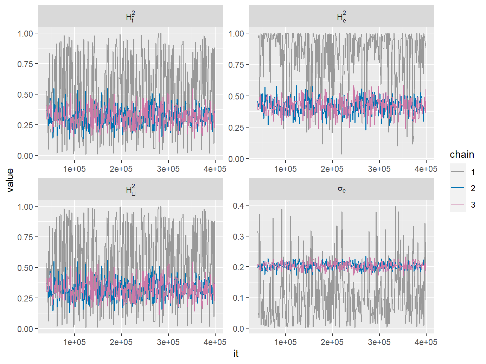

Here, we consider the POUMM from the point of view of its biological interpretation. Before we begin, we need to make an important cautionary note:
One should always be aware that non-mechanistic stochastic models like Brownian motion (BM) and Ornstein-Uhlenbeck (OU) are unlikeliy to be accurate representations of the trait evolution at the individual level, be it an individual taxon, a patient infected with a pathogen, or any other evolving entity represented by a lineage in a phylogeny. Rather, these models are useful when analyzing population properties, such as the mean trait value, variance, covariance and correlation. In terms of the models, these properties represent deterministic functions of the model parameters and the temporal information in the tree (e.g. mean root-tip distance and phylogenetic distance between couples of tips). This makes it possible to use a statistical fit of the model parameters to the tree and the data (e.g. maximum likelihood and posterior samples), to estimate point-values and credibility intervals of such population properties. All these estimates depart from the assumption that the model is at least approximately accurate at the population level. If the data violates this assumption, the resulting estimates and credibility intervals for the modeled population properties can be strongly biased. For an example of such bias caused by a wrong Brownian motion assumption, we refer the reader to (Mitov and Stadler 2018). Therefore, we recommend comparing model-based parametric estimates with non-parametric estimates. For an example of this approach, see the package patherit.
From a modeling perspective, the POUMM can be regarded as a combination of two of its widely used nested models:
The POUMM combines the applications of the above two models. The properties we will consider represent bijective functions of some of the POUMM parameters. Thus, it is possible to reparametrize the POUMM, so that the model inference is done directly on properties of interest, e.g. the phylogenetic heritability. This is particularly useful for Bayesian inference, since for Bayesian inference priors should be specified for the properties of interest rather than the default POUMM parameters. We call a parametrization any numerical bijective function mapping its argument into the default POUMM parameter-space (\(<g_0,\alpha,\theta,\sigma,\sigma_e>\)).
An interesting property of the POUMM is that, in the limit \(t\to\infty\), it defines a stationary normal distribution for the heritable component (\(g\)) at the tips with mean \(\theta\) and a variance-covariance matrix:
\[\begin{multline}\label{eq:SigmaOUEquilibrium} \begin{array}{lll} \Sigma_{ii} = \sigma_{\infty}^2 & = & \frac{\sigma^2}{2\alpha} \\ \Sigma_{ij} = \Sigma_{ij,\infty} & = & \sigma_{\infty}^2\,e^{-\alpha{d}_{ij}}, \\ \end{array} \end{multline}\]where \({d}_{ij}\) denotes the phylogenetic distance between the tips \(i\) and \(j\). The above property proves useful when there is a prior knowledge that the observed population is at equilibrium, because one can use the trait variance in the population, \(\sigma_z^2=\sigma_{\infty}^2+\sigma_e^2\) as model parameter. The corresponding parametrization is:
\[\begin{align} <g_0, \alpha,\theta,\sigma_z^2,\sigma_e> & \to<g_0, \alpha,\theta,\sigma=\sqrt{2\alpha(\sigma_{z}^2-\sigma_e^2)},\sigma_e> \end{align}\]With this parametrization, one can specify an informed prior for \(\sigma_z^2\) based on empirical estimates on similar data.
Another important aspect of the above property is that it helps to better understand the selection stregnth parameter \(\alpha\). As it turns out, \(\alpha\) can have two different biological interpretations. On the one hand, \(\alpha\) defines the rate of convergence of the population mean towards the long-term optimum \(\theta\). This rate is bigger for bigger values of \(\alpha\) and for bigger deviations from \(\theta\). Thus, \(\alpha\) is considered as selection strength or rate of adaptation under stabilizing selection. On the other hand, it is possible to assume that the majority of the tips and their mrca’s are far enough from the root, so that \(\Sigma_{ij}\) can be viewed as an exponentially decreasing function of the phylogenetic distance \({d}_{ij}\). Seen from that angle, the parameter \(\alpha\) can be interpreted as the rate of phenotypic decorrelation between tips, due to genetic drift. When interpreting the results of a model fit, it is important to be aware of this dual interpretation of \(\alpha\). In many cases (e.g. in ultrametric macro-evolutionary tree), the only source of information for inferring \(\alpha\) are the observed differences between the tips in the tree. Thus, in the absence of additional evidence, it can be erronous to assume that the inferred value of \(\alpha\) informs stabilizing selection and an adaptation rate towards \(\theta\).
A likelihood ratio test between the ML POUMM and PMM fits can be used to test if the inferred parameter \(\alpha\) is significantly above 0. As pointed out in the previous paragraph, a significantly positive \(\alpha\) does not necessarily imply stabilizing selection towards \(\theta\). Further, it is important to note that the value of \(\alpha\) can only be interpreted with respect to the time scale of the phylogeny. It can be more intuitive to consider the phylogenetic half-life, \(t_{1/2}=\frac{\ln(2)}{\alpha}\), which equals the time it takes for a species entering a new niche to evolve halfway toward its new expected optimum (Hansen 1997).
The term phylogenetic heritability, introduced with the phylogenetic mixed model (PMM) (Housworth, Martins, and Lynch 2004), measures the proportion of phenotypic variance in a population attributable to heritable factors, such as genes, as opposed to non-heritable factors, such as environment and measurement error. Although this concept has been applied mostly in the context of the original PMM, i.e. under the assumption of Brownian motion, the same concept applies to any evolutionary model allowing for the estimation of measurement error (ME) (Hansen and Bartoszek 2012). The phylogenetic heritability is defined as the expected proportion of phenotypic variance attributable to \(g\) at the tips of the tree, \(\sigma^2(g)/\left[\sigma^2(g)+\sigma_e^2\right]\) (Housworth, Martins, and Lynch 2004). This definition is a phylogenetic variant of the definition of broad-sense heritability, \(H^2\), from quantitative genetics (Lynch and Walsh 1998). However, in the case of a trait evolving along a phylogeny, the expected genotypic variance, \(\sigma^2(g)\), and, therefore, the phylogenetic heritability, are functions of time. Depending on the applicaiton, the following three types of phylogenetic heritability might all be of interest:
where \(y=\frac{\bar{t}\sigma^2}{\sigma_e^2 H_{\bar{t}}^2} - \frac{\bar{t}\sigma^2}{\sigma_e^2}\) and \(W\) is the Lambert-W function.
To learn about different parametrizations supported by the POUMM package, read the documentation page ?specifyPOUMM.
Whenever presented with data consisting of a rooted phylogenetic tree with observed trait-values at its tips, the POUMM package can be used to answer THE following questions about the population distribution, the evolution and the phylogenetic signal of the trait in question.
In the following subsections, we use our example simulation from the vignette vignette A User Guide to the POUMM R-package. Let us quickly remind the true POUMM parameters for this simulation:
N <- 500
g0 <- 0
alpha <- .5
theta <- 2
sigma <- 0.2
sigmae <- 0.2 The first step to answering that question is to visualize the data and check for obvious violations of the POUMM assumptions. The POUMM method expects that the trait-values at the tips are a sample from a multivariate normal distribution. With an ultrametric species tree, where all tips are equally distant from the root, this assumption translates in having all trait-values be realizations of identically distributed normal random variables. In the case of a non-ultrametric tree, it is far more useful to look at a sequence of box-whisker or violin plots of the trait-values, gouped by their root-tip distance.
Once visualizing the data has confirmed its normality, we recommend comaparing the POUMM-fit with a fit from a NULL-model such as the phylogenetic mixed model (PMM) (Housworth, Martins, and Lynch 2004). Since the PMM is nested in the POUMM, i.e. in the limit \(\alpha\to0\), the POUMM model is equivalent to a PMM model with the same initial genotypic value \(g_0\) and unit-time variance \(\sigma\), it is easy to fit a PMM model to the data by fixing the value of the parameter \(\alpha\) to 0:
specPMM <- specifyPMM(z[1:N], tree)
fitPMM <- POUMM(z[1:N], tree, spec = specPMM, doMCMC=FALSE)Now a likelihood-ratio test between the maximum likelihood fits clearly shows that the POUMM significantly outperforms the PMM to the data:
lmtest::lrtest(fitPMM, fitPOUMM2)## Likelihood ratio test
##
## Model 1: fitPMM
## Model 2: fitPOUMM2
## #Df LogLik Df Chisq Pr(>Chisq)
## 1 3 -12.9
## 2 5 16.3 2 58.5 2e-13 ***
## ---
## Signif. codes: 0 '***' 0.001 '**' 0.01 '*' 0.05 '.' 0.1 ' ' 1Since lrtest only uses the ML-fit, to save time, we disabled the MCMC fit by specifying doMCMC = FALSE. In real situations, though, it is always recommended to enable the MCMC fit, since it can improve the ML-fit if it finds a region of higher likelihood in the parameter space that has not been discovered by the ML-fit. Moreover, comparing posterior samples for the PMM and POUMM fit can, in principle, be more informative and a likelihood-ratio test.
As an exersise, we can generate data under the PMM model and see if a POUMM fit on that data remains significantly better than a PMM fit:
gBM <- rVNodesGivenTreePOUMM(tree, g0, alpha = 0, theta = 0, sigma = sigma)
zBM <- gBM + e
fitPMM_on_zBM <- POUMM(zBM[1:N], tree, spec = specPMM, doMCMC = FALSE)
fitPOUMM_on_zBM <- POUMM(zBM[1:N], tree, doMCMC = FALSE)
lmtest::lrtest(fitPMM_on_zBM, fitPOUMM_on_zBM)## Likelihood ratio test
##
## Model 1: fitPMM_on_zBM
## Model 2: fitPOUMM_on_zBM
## #Df LogLik Df Chisq Pr(>Chisq)
## 1 3 -114
## 2 5 -113 2 1.65 0.44To answer this question, consider the estimated values of the POUMM-parameters \(\theta\) and \(\alpha\). Note that the parameter \(\theta\) is relevant only if the value of the parameter \(\alpha\) is significantly positive. One could accept that the ML-estimate for \(\alpha\) is significantly positive if a likelihood ratio test between a ML PMM and POUMM fits gives a p-value below a critical level (see the question above for an example). An inisignificant value of \(\alpha\) reveals that the hypothesis of neutral drift (Brownian motion) cannot be rejected.
The long-term mean is given by the estimated parameter theta. The long-term variance is given by the sum sigmaG2tInf+sigmae^2 taken from the summary table of a POUMM-fit.
In other words, what is the proportion of observable phenotypic variance attributable to the phylogeny? To answer this question, the POUMM package allows to estimate the phylogenetic heritability of the trait. Assuming that the tree represents the genetic relationship between individuals in a population, \(H_\bar{t}^2\) provides an estimate for the broad-sense heritability \(H^2\) of the trait in the population.
When the goal is to estimate \(H_{\bar{t}}^2\) (H2tMean), it is imortant to specify an uninformed prior for it. Looking at the densities for chain 1 (red) on the previous figures, it becomes clear that the default prior favors values of H2tMean, which are either close to 0 or close to 1. Since by definition \(H_{\bar{t}}^2\in[0,1]\), a reasonable uninformed prior for it is the standard uniform distribution. We set this prior by using the specifyPOUMM_ATH2tMeanSeG0 function. This specifies that the POUMM fit should be done on a parametrization \(<\alpha,\theta,H_{\bar{t}}^2,\sigma_e,g_0>\) rather than the standard parametrization \(<\alpha,\theta,\sigma,\sigma_e,g_0>\). It also specifies a uniform prior for \(H_{\bar{t}}^2\). You can explore the members of the specification list to see the different settings:
specH2tMean <- specifyPOUMM_ATH2tMeanSeG0(z[1:N], tree, nSamplesMCMC = 4e5)
# Mapping from the sampled parameters to the standard POUMM parameters:
specH2tMean$parMapping## function (par)
## {
## if (is.matrix(par)) {
## par[, 3] <- sigmaOU(par[, 3], par[, 1], par[, 4], tMean)
## colnames(par) <- c("alpha", "theta", "sigma", "sigmae",
## "g0")
## }
## else {
## par[3] <- sigmaOU(par[3], par[1], par[4], tMean)
## names(par) <- c("alpha", "theta", "sigma", "sigmae",
## "g0")
## }
## par
## }
## <environment: 0x7fe2fa5578c8># Prior for the MCMC sampling
specH2tMean$parPriorMCMC## function (par)
## {
## dexp(par[1], rate = tMean/6.931, log = TRUE) + dnorm(par[2],
## zMean, 2 * zSD, TRUE) + dunif(par[3], min = 0, max = 1,
## log = TRUE) + dexp(par[4], rate = 2/zSD, log = TRUE) +
## dnorm(par[5], zMean, 2 * zSD, log = TRUE)
## }
## <environment: 0x7fe2fa5578c8># Bounds for the maximum likelihood search
specH2tMean$parLower## alpha theta H2tMean sigmae g0
## 0.0000 -2.2073 0.0000 0.0000 0.5176specH2tMean$parUpper## alpha theta H2tMean sigmae g0
## 10.8379 5.9389 0.9900 0.5335 3.2139Then we fit the model:
fitH2tMean <- POUMM(z[1:N], tree, spec = specH2tMean)
## stat N MLE PostMean HPD ESS G.R.
## 1: H2tMean 500 0.3057 0.3155 0.1788,0.4708 720 1
## 2: sigmae 500 0.2013 0.2032 0.1830,0.2266 720 1
## 3: H2e 500 0.4307 0.4183 0.2783,0.5296 720 1
## 4: H2tInf 500 0.3073 0.3213 0.1781,0.4743 720 1Now we see that the prior density for H2tMean is nearly uniform. It becomes clear that the process has converged to its long-term heritability since the intervals for H2tMean and H2tInf are nearly the same. Notice, though, that the estimate for the empirical heritability H2e is shifted towards 1 compared to H2tMean and H2tInf. This shows an important difference between H2e and the time-dependent formulae for phylogenetic heritability: H2e takes into account all values of z including those at the very beginning when the process was far away from equilibrium. Thus the estimated phenotypic variance over all trait-values at all times can be substantially bigger compared to the current trait-variance in the population:
# Compare global empirical heritability
H2eGlobal <- H2e(z[1:N], sigmae = coef(fitH2tMean)['sigmae'])
# versus recent empirical heritability
H2eRecent <- H2e(z[1:N], tree, sigmae = coef(fitH2tMean)['sigmae'], tFrom = 5)
print(c(H2eGlobal, H2eRecent))## [1] 0.4307 0.3409To learn more about different ways to specify the POUMM fit, read the documentation page ?specifyPOUMM.
Butler, M A, and A A King. 2004. “Phylogenetic comparative analysis: A modeling approach for adaptive evolution.” American Naturalist 164 (6): 683–95.
Hansen, Thomas F. 1997. “Stabilizing Selection and the Comparative Analysis of Adaptation.” Evolution; International Journal of Organic Evolution 51 (5): 1341–51.
Hansen, Thomas F, and Krzysztof Bartoszek. 2012. “Interpreting the evolutionary regression: the interplay between observational and biological errors in phylogenetic comparative studies.” Systematic Biology 61 (3): 413–25.
Harmon, Luke J, Jonathan B Losos, T Jonathan Davies, Rosemary G Gillespie, John L Gittleman, W Bryan Jennings, Kenneth H Kozak, et al. 2010. “Early bursts of body size and shape evolution are rare in comparative data.” Evolution 64 (8): 2385–96.
Hodcroft, Emma, Jarrod D Hadfield, Esther Fearnhill, Andrew Phillips, David Dunn, Siobhan O’Shea, Deenan Pillay, Andrew J Leigh Brown, on behalf of the UK HIV Drug Resistance Database, and the UK CHIC Study. 2014. “The Contribution of Viral Genotype to Plasma Viral Set-Point in HIV Infection.” PLoS Pathogens 10 (5): e1004112.
Housworth, Elizabeth A, Emília P Martins, and Michael Lynch. 2004. “The phylogenetic mixed model.” The American Naturalist 163 (1): 84–96.
Lynch, Michael. 1991. “Methods for the Analysis of Comparative Data in Evolutionary Biology.” Evolution 45 (5): 1065–80.
Lynch, Michael, and Bruce Walsh. 1998. Genetics and Analysis of Quantitative Traits. Sinauer Associates Incorporated.
Mitov, Venelin, and Tanja Stadler. 2018. “A Practical Guide to Estimating the Heritability of Pathogen Traits.” Molecular Biology and Evolution 35 (3): 756–72. doi:10.1093/molbev/msx328.